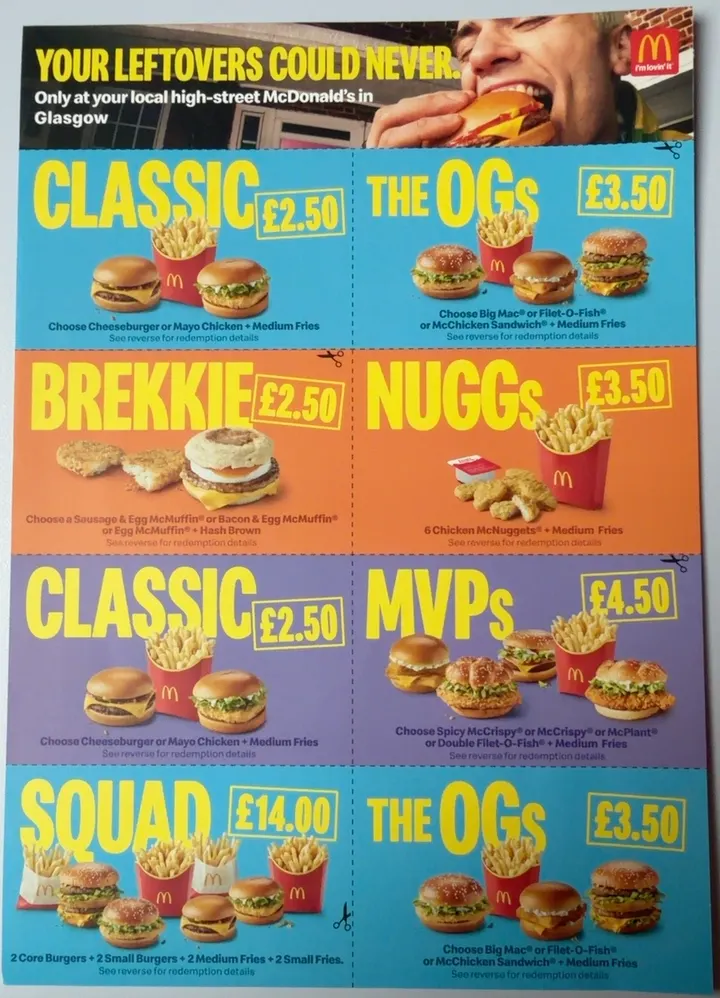

{{logo:coop}}
学生专属Co-op 学生 10% off
出示 Young Scot 卡，参与门店食品饮料 10% off。另有 £1 的 Co-op 会员，部分商品会员价，买指定 Co-op 商品每 £1 返 2p。
注意：Co-op 学生折扣目前只剩苏格兰可用，英格兰等地已取消。
来源：Co-op 官网 · 2026-10-15 访问
吉士汉堡 / Mayo Chicken 二选一 + 中薯
券码 81749053巨无霸 / 麦香鱼 / McChicken 三选一 + 中薯
券码 81749054McCrispy / Spicy McCrispy / Double Filet-O-Fish / McPlant 四选一 + 中薯
券码 81749055门店：券面写参与门店见 mcdonalds.co.uk/highstreet，11 点后可用，规则和下面格拉斯哥那批一样（每人每天一张、不外送、不叠加、16 岁以上、中薯可换 Side Salad）。
能不能直接输码：小红书网友分享可以在自助点餐机点「Enter Voucher Code」输 8 位码，或扫券面条形码；但券面写明不收扫描件和复印件，不保证每家店都认，有纸质原券最稳。

吉士汉堡 / Mayo Chicken 二选一 + 中薯
11 点后 · 券码 81749066 · 纸上 2 张巨无霸 / 麦香鱼 / McChicken Sandwich 三选一 + 中薯
11 点后 · 券码 81749067 · 纸上 2 张Sausage & Egg / Bacon & Egg / Egg McMuffin 三选一 + 薯饼
11 点前 · 券码 817490656 块麦乐鸡 + 中薯
11 点后 · 券码 81749072Spicy McCrispy / McCrispy / McPlant / Double Filet-O-Fish 四选一 + 中薯
11 点后 · 券码 817490682 个大汉堡（麦香鱼 / 巨无霸 / McChicken Sandwich / McPlant）+ 2 个小汉堡（吉士 / Mayo Chicken / 双层吉士）+ 2 中薯 + 2 小薯
11 点后 · 券码 81749069 · 4 人拼单约 £3.50 一人来源：10 月这批来自小红书帖「英区麦当劳 10 月穷鬼套餐 code 整理」和券面截图；格拉斯哥这批来自网友分享的纸质券正反面，条款按券面原文整理，2026-10-21 收录。纸券不是麦当劳官网活动，各店执行可能不同。
限时价格以门店和 App 当天显示为准，不是每家店都参加。来源：KFC、McDonald's、Just Eat 官网活动页，核实于 2026-10-21；格拉斯哥纸质券见下方。
出示 Young Scot 卡，参与门店食品饮料 10% off。另有 £1 的 Co-op 会员，部分商品会员价，买指定 Co-op 商品每 £1 返 2p。
注意：Co-op 学生折扣目前只剩苏格兰可用，英格兰等地已取消。
结账扫 Clubcard 就按 Clubcard Prices 结算，蓝色价签那些。店内每消费 £1 积 1 分，1 分值 1p；满 150 分出券，换合作商家（餐厅等）最高可翻 2–3 倍。
怎么领：下载 Tesco Clubcard App 注册，免费。
扫 Nectar 卡享 Nectar Prices。另有 Your Nectar Prices：按你的购物记录每周最多 10 个专属折扣，每周五刷新，要先在 App 里点开解锁。
怎么领：注册 Nectar App，购物前在 Sainsbury's 栏目解锁。
2026-05-05 起改成 Lidl Plus Points：门店消费攒积分，在 App 积分商城换单品券、满减券。App 里还有个人专属券。
怎么领：下载 Lidl Plus App，结账前扫码。
买 Star Products 或完成 App 里的任务，钱返到 Cashpot，满 £1 就能转成 Asda 购物券。Cashpot 和券都有有效期，以 App 显示为准。
怎么领：下载 Asda Rewards App，结账扫码。
每消费 £1 得 100 分，首单送 1000 分。积分换免费餐：
注意：积分 6 个月过期；第三方外卖平台的订单不积分。
注册送一杯免费咖啡。按品类集章，同一类集满 9 个，第 10 个免费；填生日送一份甜点。
怎么领：下载 Greggs App，付款前扫码，现金和刷卡都行。
单笔消费满 £3 获得一次 Rewards Arcade 游戏机会，每天最多玩 2 次，可能赢 Zinger 汉堡、薯条、Bargain Bucket 等。奖励 40 天内用完。
注意：注册没有新人礼，第三方外卖订单不算。
店家把当天剩下的食物装成 Surprise Bag，在 App 里预订，到点去店里取。Aldi、Greggs 等连锁都有上架，据报道 Greggs 热食袋 £2.99 起。
技巧：热门店家一上架就被抢，收藏常去的店开提醒。
Co-op 门店的 Second Chance Saver Bag 约 £3 一袋。
怎么领：在 Too Good To Go App 搜附近的 Co-op。
奖励条款银行随时会改，开户前以官网和你收到的条款为准。开户一般会查信用记录，短时间内别同时开太多家。
Monzo、Starling、Revolut 全程在 App 里开，护照拍照、人脸验证就行，一般不用先有地址证明，当天就能拿到卡号收钱付款。
续签签证、租房常要银行流水，有的不认线上银行的电子账单。线下银行一般要护照、eVisa 和学校开的 bank letter（格大学生在 MyCampus 自己就能生成），开户时会查信用记录。
HSBC、Barclays 的转户奖励要用 CASS 把一个旧账户整个转过去，旧账户会被关掉。多开一个线上银行专门拿来转，别动日常用的那张卡。
| 银行 | 适合用来 | 开户 | 现在有什么奖励 |
|---|---|---|---|
| Monzo | 日常主卡、AA 分账、自动存钱；可以用来做转户 | App 开户，护照 + 人脸验证 | 朋友邀请有随机奖励，金额以 App 显示为准 |
| Starling | 日常主卡；2026-08 推出学生账户，带无息透支 | 全程 App | 没有固定开户奖励 |
| Revolut | 收国内汇款、换汇、出国旅行刷卡 | App 开户 | 邀请奖励时有时无，以 App 为准 |
| Chase UK | 刷卡返现、活期利息 | App 开户 | 新客户返现活动常变，以 App 为准 |
| 银行 | 账户 | 现在有什么奖励 | 注意 |
|---|---|---|---|
| HSBC | Bank Account；另有国际学生账户 | 转户 £220，见下面攻略 | 2023 年起有过 HSBC / first direct 活期账户的不算 |
| Barclays | Bank Account | 转户最高 £300（10-01 起） | 要转 3 笔 Direct Debit，30 天内存 £2,000 |
| Bank of Scotland | 学生账户 | £100 + Deliveroo 券，10-30 前开户本轮开户奖励已结束，留意下一轮 | 和 Lloyds、Halifax 同集团，只能领一份 |
| Lloyds | 学生账户 | £100 + 最高 £120 Deliveroo 券，10-30 前开户本轮开户奖励已结束，留意下一轮 | 同上 |
| RBS | 学生账户 | £100 + 4 年 tastecard | 2022-07 起在 NatWest 集团领过学生奖励的不算 |
| Santander | 学生账户 | 送 4 年 16-25 Railcard（以官网为准） | 火车坐得多的划算 |
| Nationwide | FlexStudent | £100 + £120 Just Eat 券，10-22 截止新生奖励已结束，留意下一轮 | 只限今年入学的新生 |
学生账户的透支额度和奖励多数要求你是英国本科或研究生在读，国际学生能不能开、能拿多少透支，以银行审核为准。来源：格拉斯哥大学 Banking 页、Save the Student、Which?、Moneyfacts，2026-10-21 访问。奖励以各银行官网为准。
从开户算起 60 天内，累计转入 £2,000 就行，不用一直留在账户里。网友实测分几次转进转出也算，比如 4 次各 £500。
用 HSBC 借记卡刷满 £500。取现、退款、冲正交易、Direct Debit 扣款、银行转账都不算。网友实测用这张卡交学费算消费。
通过 Current Account Switch Service 把另一个英国银行账户整体转到 HSBC，被转的账户要先绑好 2 笔 Direct Debit。网友实测 Direct Debit 只要绑上就行，转户前后都不要求真的扣过款。
新客户。2023-01-01 以来有过 HSBC UK 或 first direct 活期账户的不算，Basic Bank Account 不参加。官网写的是在 HSBC App 里开户；也有人网上开户后收到邀请邮件参加。线下网点开户不算。以你看到的条款为准。
旧账户的余额、Direct Debit 和收款都会搬到 HSBC，旧账户随后关闭。用一个不常用的备用账户来转（网友用的是 Monzo），别拿日常主卡或收工资的账户。
CASS 转户最快也要 7 个工作日。新绑的 Direct Debit 一般 3 个工作日后才在银行 App 里显示，显示了再发起转户。三件事尽量在开户后前 4 周做完。
国际学生：开户需要英国住址和身份证明，能不能开以 HSBC App 审核为准。
来源：HSBC UK 官网和英国比价网站的报道；时间线和交学费算消费来自小红书网友 2026-10 的实测分享。2026-10-21 整理。
McDonald's、KFC、Greggs 都要在点单或付款前扫 App 码，事后补不了。经第三方外卖平台下单一般不积分。
McDonald's 积分 6 个月过期，KFC 奖励 40 天，Asda Cashpot 也会过期。攒够就换，别囤。
会员价和满减只在本来就要买的时候划算。先列购物清单，再看哪家有会员价。
超市傍晚常把临期商品贴黄标降价，时间各店不同，多去几次就摸清了。